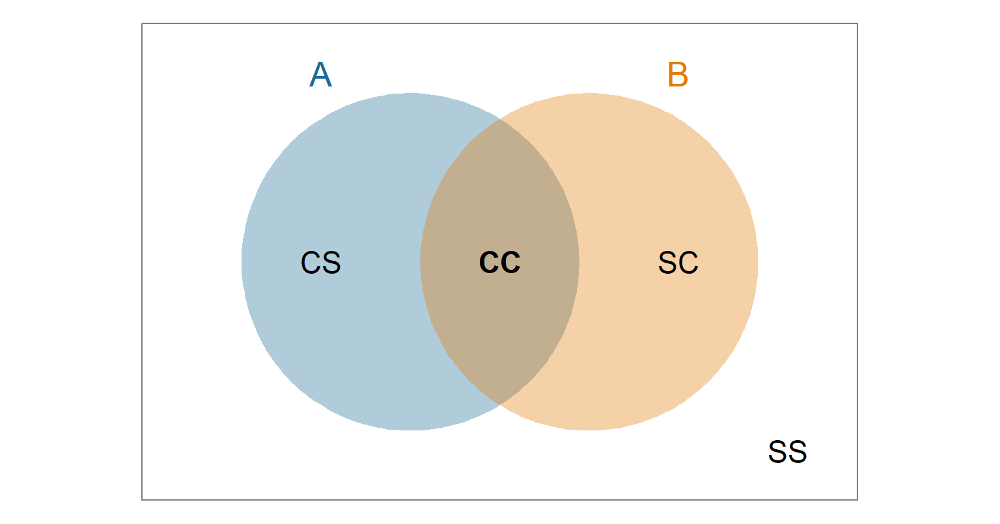
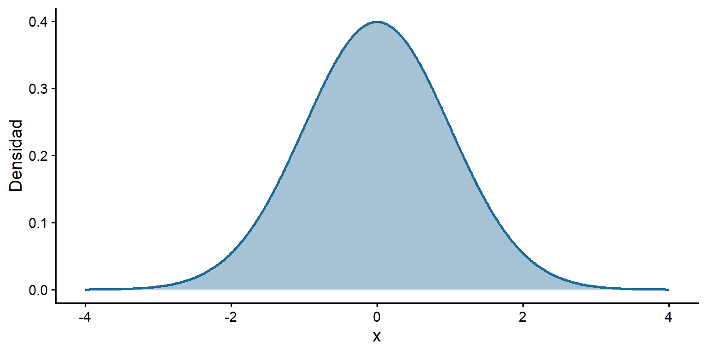
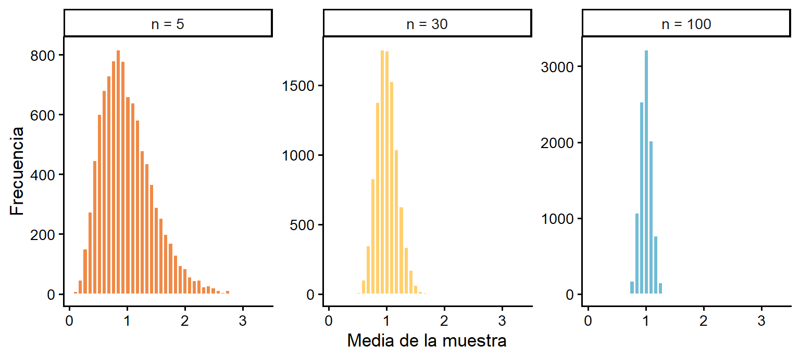

Clase 2: Probabilidad e Inferencia
Nivelación Estadística
Prof. Gabriel Duarte Zúñiga
Universidad Adolfo Ibáñez | DIAPP-2026
4 de junio de 2026
¡Bienvenidas y Bienvenidos!
Repaso: ¿Dónde Quedamos?
En la Clase 1 aprendimos a describir datos:
- Medidas de tendencia central (media, mediana) y variabilidad (varianza, desviación estándar).
- Visualización (histograma, densidad, boxplot) y asociación (correlación, scatterplot).
Pero la estadística descriptiva solo resume los datos que tenemos a mano (una muestra). La gran pregunta que abordaremos hoy es:
¿Cómo pasamos de lo que observamos en una muestra a conclusiones sobre toda la población?
La herramienta que nos permite dar ese salto es la probabilidad.
🎯 Objetivos Clase 2
Los objetivos específicos de la clase 2 son:
- Comprender las nociones básicas de probabilidad y aplicarlas a ejemplos concretos.
- Conectar la probabilidad con las variables aleatorias y sus distribuciones (binomial y normal).
- Entender por qué una muestra genera incertidumbre y cómo el Teorema del Límite Central nos ayuda a manejarla.
- Construir e interpretar intervalos de confianza.
- Plantear una prueba de hipótesis sencilla, interpretar el p-valor y concluir.
¿Qué Veremos Hoy?
- Probabilidad y ejemplos concretos.
- Variables aleatorias y distribuciones conocidas (binomial).
- La distribución normal.
- Muestreo, Teorema del Límite Central y error estándar.
- Intervalos de confianza, p-valor y prueba de hipótesis (t-test).
Metodología
Igual que en la Clase 1, alternaremos exposición breve con preguntas 🧠 y ejercicios guiados 💻 que resolveremos juntos.
Probabilidad
¿Qué es la Probabilidad?
-
La probabilidad es un número entre 0 y 1 que mide qué tan factible es que ocurra un resultado.
- \(0\) = imposible, \(1\) = seguro, \(0.5\) = tan probable como no.
Una forma intuitiva de entenderla es como la frecuencia relativa de un resultado cuando repetimos un experimento muchas veces.
Idea clave
Si lanzamos una moneda equilibrada muchísimas veces, la proporción de caras se acercará a \(0.5\). Esa proporción de largo plazo es la probabilidad.
Conceptos Básicos
Para hablar de probabilidad necesitamos tres ideas:
Experimento (proceso) aleatorio: una acción cuyo resultado no podemos predecir con certeza (lanzar una moneda).
-
Espacio muestral (\(S\)): el conjunto de todos los resultados posibles.
- Una moneda: \(S = \{Cara, Sello\}\).
-
Evento: un subconjunto del espacio muestral que nos interesa.
- “Salió cara”: \(A = \{Cara\}\).
Cuando todos los resultados son igualmente probables:
\[P(A) = \frac{\text{n° de resultados en } A}{\text{n° total de resultados en } S}\]
El Espacio Muestral con un Diagrama de Venn
Lancemos dos monedas. El espacio muestral tiene 4 resultados igualmente probables:
\[S = \{CC,\ CS,\ SC,\ SS\}\]
Un diagrama de Venn nos ayuda a visualizar eventos dentro de \(S\) (el rectángulo). Por ejemplo:
- \(A\) = “la primera es cara” \(= \{CC, CS\}\)
- \(B\) = “la segunda es cara” \(= \{CC, SC\}\)
El resultado \(CC\) está en ambos eventos (la intersección).
Calculemos una Probabilidad Concreta
Con dos monedas, \(S = \{CC,\ CS,\ SC,\ SS\}\) (4 resultados igualmente probables). Calculemos:
- \(P(\text{exactamente una cara}) = \dfrac{|\{CS, SC\}|}{4} = \dfrac{2}{4} = 0.5\)
- \(P(\text{al menos una cara})\): en vez de contar \(\{CC, CS, SC\}\), usamos el complemento. El único caso sin caras es \(\{SS\}\):
\[P(\text{al menos una cara}) = 1 - P(\text{ninguna cara}) = 1 - \tfrac{1}{4} = 0.75\]
Regla del complemento
Muchas veces es más fácil calcular lo contrario de lo que buscamos: \(P(A) = 1 - P(\text{no } A)\).
Probabilidad como Frecuencia Relativa en R
Comprobemos la idea de “frecuencia de largo plazo” simulando 10.000 lanzamientos de una moneda:
set.seed(123)
lanzamientos <- sample(c("Cara", "Sello"), size = 10000, replace = TRUE)
prop.table(table(lanzamientos))lanzamientos
Cara Sello
0.5017 0.4983 La proporción de caras se acerca a 0.5, tal como predice la teoría. A más repeticiones, más cerca del valor verdadero.
Eventos Independientes
-
Dos eventos son independientes cuando el resultado de uno no afecta la probabilidad del otro.
- Que la primera moneda salga cara no cambia lo que pase con la segunda.
Para eventos independientes, la probabilidad de que ocurran ambos se multiplica:
\[P(A \text{ y } B) = P(A) \times P(B)\]
- Ejemplo: \(P(\text{dos caras seguidas}) = 0.5 \times 0.5 = 0.25\).
Nota
La independencia será la clave para conectar la probabilidad con las distribuciones que veremos a continuación.
🧠 Pregunta N° 1
Lanzamos un dado equilibrado de 6 caras una vez.
¿Cuál es la probabilidad de obtener un número mayor que 4?
- 2/6 ≈ 0,33.
- 4/6 ≈ 0,67.
- 1/6 ≈ 0,17.
- 3/6 = 0,5.
Variables Aleatorias y Distribuciones
De los Resultados a los Números
Una variable aleatoria (\(X\)) es una regla que asigna un número a cada resultado de un experimento aleatorio.
Ejemplo: lancemos 3 monedas y definamos \(X = \text{n° de caras}\).
- El espacio muestral tiene 8 resultados, y \(X\) puede tomar los valores \(0, 1, 2, 3\):
\[\{\underbrace{SSS}_{0},\ \underbrace{CSS, SCS, SSC}_{1},\ \underbrace{CCS, CSC, SCC}_{2},\ \underbrace{CCC}_{3}\}\]
Así pasamos de “caras y sellos” a números sobre los que podemos calcular probabilidades.
Distribución de Probabilidad
La distribución de una variable aleatoria nos dice qué probabilidad tiene cada valor posible. Para $X = $ n° de caras en 3 lanzamientos:
| \(x\) | 0 | 1 | 2 | 3 |
|---|---|---|---|---|
| \(P(X = x)\) | 1/8 | 3/8 | 3/8 | 1/8 |
- Todas las probabilidades son \(\geq 0\).
- La suma de todas las probabilidades es 1.
Tip
La función que asigna una probabilidad a cada valor de una variable discreta se llama función de masa de probabilidad (pmf).
La Distribución Binomial
El ejemplo de las monedas sigue una distribución binomial, que aparece cuando (devore2016?):
- Repetimos un experimento un número fijo de veces (\(n\)).
- Cada intento tiene solo dos resultados (éxito / fracaso).
- Los intentos son independientes.
- La probabilidad de éxito (\(p\)) es constante.
Lanzar 3 monedas y contar caras cumple las 4 condiciones: \(n = 3\), \(p = 0.5\), éxito = “cara”.
La Familia de Funciones de Distribución en R
R tiene una familia de funciones para cada distribución. Para la binomial, el sufijo es binom:
| Prefijo | Pregunta que responde | Función |
|---|---|---|
d |
¿Probabilidad de un valor exacto? \(P(X=x)\) | dbinom() |
p |
¿Probabilidad acumulada? \(P(X \leq x)\) | pbinom() |
q |
¿Qué valor deja una probabilidad acumulada dada? | qbinom() |
r |
Generar valores aleatorios | rbinom() |
Nota
El mismo patrón aplica a la normal (dnorm, pnorm, …) y a otras distribuciones. ¡Solo cambia el sufijo!
💻 Aplicación: dbinom()
¿Cuál es la probabilidad de obtener exactamente 2 caras en 3 lanzamientos? (\(x = 2\), \(n = 3\), \(p = 0.5\))
El resultado es 0.375 = 3/8, exactamente lo que habíamos contado en la tabla. R nos ahorra enumerar el espacio muestral.
💻 Aplicación: pbinom()
¿Cuál es la probabilidad de obtener al menos 1 cara? Usamos el complemento: \(P(X \geq 1) = 1 - P(X = 0)\).
pbinom(0, 3, 0.5) entrega \(P(X \leq 0)\), que aquí es igual a \(P(X = 0)\):
El resultado es 0.875 = 7/8: la misma lógica del complemento que usamos con las dos monedas, ahora con R.
💻 Ejercicio Guiado: Binomial
Una prueba tiene 5 preguntas de verdadero/falso. Un estudiante responde al azar (\(p = 0.5\) de acertar cada una). Complete el código para calcular la probabilidad de acertar exactamente 3:
Pista
La pregunta dice “exactamente 3”, así que usamos el prefijo d (dbinom).
De lo Discreto a lo Continuo
La binomial es discreta: \(X\) toma valores separados (0, 1, 2, 3…).
Pero muchas variables son continuas: pueden tomar cualquier valor en un rango (altura, ingreso, temperatura).
- En variables continuas ya no preguntamos por \(P(X = x)\) exacto (es prácticamente 0), sino por la probabilidad de caer en un intervalo, que corresponde al área bajo la curva de su función de densidad.
La distribución continua más importante —y la protagonista de la inferencia— es la distribución normal.
La Distribución Normal
La Distribución Normal
Es una distribución continua con forma de campana simétrica.
-
Se describe con dos parámetros:
- \(\mu\) (media): dónde está el centro.
- \(\sigma\) (desviación estándar): qué tan ancha es.
Se abrevia \(X \sim \mathcal{N}(\mu, \sigma^2)\).
En ella se cumple que media = mediana = moda.

El Efecto de los Parámetros
\(\mu\) mueve la curva; \(\sigma\) la hace más ancha o angosta:

Ejemplo: La Altura de una Población
Supongamos que la altura (en cm) de una población se distribuye de forma normal con media 177 y desviación estándar 10:
\[X \sim \mathcal{N}(177,\ 10^2)\]

Queremos calcular probabilidades sobre la altura usando pnorm().
💻 Calcular Probabilidades: pnorm()
¿Cuál es la probabilidad de que alguien mida menos de 160 cm? pnorm() entrega el área a la izquierda (la cdf, \(P(X \leq x)\)):
Hay un 4.5% de probabilidad de medir menos de 160 cm.
💻 Ejercicio Guiado: Normal
Con la misma distribución de altura \(\mathcal{N}(177, 10^2)\), complete el código para calcular la probabilidad de medir entre 160 y 180 cm.
Pista: es el área a la izquierda de 180 menos el área a la izquierda de 160.
El resultado es 0.573: poco más de la mitad de la población mide entre 160 y 180 cm.
Puntaje Z y la Regla Empírica
Recordemos de la Clase 1 el puntaje Z, que mide a cuántas desviaciones estándar está un valor de la media: \[z = \frac{x - \mu}{\sigma}\]
En cualquier distribución con forma de campana se cumple la Regla Empírica:
| Rango | % de los datos |
|---|---|
| \(\mu \pm 1\sigma\) | ≈ 68% |
| \(\mu \pm 2\sigma\) | ≈ 95% |
| \(\mu \pm 3\sigma\) | ≈ 99.7% |
Estos porcentajes son el área bajo la curva normal, y serán la base de los intervalos de confianza.
🧠 Pregunta N° 2
La altura sigue una \(\mathcal{N}(177, 10^2)\). Una persona mide 197 cm.
¿Qué podemos decir de su puntaje Z?
- z = 2: está a 2 desviaciones sobre la media, entre el 2,5% más alto.
- z = 2: es un valor imposible bajo esta distribución.
- z = 20: está muy lejos de la media.
- z = 0,5: es un valor muy común.
Inferencia: De la Muestra a la Población
Población vs. Muestra
Población (\(N\)): el grupo completo que nos interesa (por ejemplo, todos los hogares de Chile).
Muestra (\(n\)): un subconjunto de la población que efectivamente observamos.
Un parámetro describe a la población (la media real \(\mu\)). Casi nunca lo conocemos.
Un estadístico se calcula desde la muestra (la media muestral \(\bar{x}\)). Es nuestra estimación del parámetro.
Tip
Hacemos inferencia: usamos el estadístico de una muestra para sacar conclusiones sobre el parámetro de la población.
El Problema: la Incertidumbre
Si tomamos otra muestra, obtendremos una media distinta. Y otra más, otra distinta.
Cada muestra entrega una estimación algo diferente: existe variabilidad muestral.
¿Cómo se comportan todas esas medias muestrales si repitiéramos el muestreo muchísimas veces?
La respuesta es uno de los resultados más importantes de la estadística: el Teorema del Límite Central.
Teorema del Límite Central (TLC)
El TLC dice que, si tomamos muchas muestras de tamaño \(n\) y calculamos la media de cada una:
- La distribución de esas medias tiende a una normal…
- …aunque la población original no sea normal,
- centrada en la media poblacional \(\mu\),
- y más angosta mientras mayor sea \(n\).
Veamos una breve animación que lo explica:
💻 Una Ilustración del TLC en R
Partamos de una población muy asimétrica (nada normal). Tomamos 10.000 muestras y graficamos sus medias para 3 tamaños de \(n\):

A mayor \(n\), la distribución de las medias es más normal y más angosta, tal como predice el TLC.
El Error Estándar (SE)
El error estándar resume en un solo número cuánto varían las medias muestrales.
Es, simplemente, la desviación estándar de la distribución de las medias, y se estima como:
\[SE = \frac{s}{\sqrt{n}}\]
donde \(s\) es la desviación estándar de la muestra y \(n\) su tamaño.
La intuición central de la inferencia
Mientras más grande es la muestra (\(n\)), más pequeño es el error estándar: nuestra estimación es más precisa.
🧠 Pregunta N° 3
Dos equipos estiman el ingreso promedio de una comuna. El equipo A usa una muestra de 100 personas; el equipo B, de 1.000.
¿Qué estimación tendrá, en general, un menor error estándar?
- La del equipo B, porque a mayor n menor es el error estándar.
- La del equipo A, porque usa menos datos.
- Ambas tendrán el mismo error estándar.
- No se puede saber sin conocer la media.
Intervalos de Confianza y Pruebas de Hipótesis
Intervalo de Confianza (IC)
Una estimación puntual (como \(\bar{x}\)) casi nunca es exactamente igual al parámetro. Por eso reportamos un rango de valores plausibles.
Un intervalo de confianza es ese rango, construido para contener al parámetro con un nivel de confianza dado (típicamente 95%):
\[\bar{x} \pm c \times SE\]
donde \(c\) es un valor crítico (cercano a 2 para el 95%, por la Regla Empírica).
Interpretación correcta
Si repitiéramos el muestreo muchas veces, cerca del 95% de los intervalos construidos contendría el verdadero parámetro. No es que “hay 95% de probabilidad de que el parámetro esté en este intervalo particular”.
💻 Construyamos un IC en R
Usaremos bdims (openintro), con 507 medidas físicas. Estimemos la altura promedio (hgt) con un IC al 95%:
El resultado es un rango alrededor de la media: nuestra estimación de la altura promedio con su incertidumbre.
La Lógica de una Prueba de Hipótesis
Una prueba de hipótesis nos ayuda a decidir si los datos respaldan una afirmación. Siempre planteamos dos hipótesis:
Hipótesis nula (\(H_0\)): “no hay efecto / no hay diferencia”. Es lo que asumimos por defecto.
Hipótesis alternativa (\(H_1\)): “sí hay efecto / sí hay diferencia”. Es lo que queremos probar.
La idea
Asumimos que \(H_0\) es cierta y nos preguntamos: ¿qué tan sorprendentes serían estos datos si \(H_0\) fuera verdad? Si son muy sorprendentes, dudamos de \(H_0\).
El p-valor
El p-valor mide esa “sorpresa”: es la probabilidad de observar un resultado al menos tan extremo como el nuestro si \(H_0\) fuera cierta.
Lo comparamos con un umbral \(\alpha\) (habitualmente 0.05):
- p-valor < 0.05 → resultado poco probable bajo \(H_0\) → rechazamos \(H_0\) (hay evidencia de un efecto).
- p-valor ≥ 0.05 → resultado compatible con \(H_0\) → no rechazamos \(H_0\) (no hay evidencia suficiente).
Importante
“No rechazar \(H_0\)” no prueba que \(H_0\) sea verdad; solo significa que no tenemos evidencia suficiente en su contra.
La Prueba t (t-test)
La prueba t es una de las más usadas. Sirve, por ejemplo, para comparar la media de dos grupos.
Pregunta clave: ¿la diferencia de medias que observo es real, o pudo deberse al azar del muestreo?
-
Ejemplo con
bdims: ¿difiere la altura promedio entre hombres y mujeres?- \(H_0\): la altura promedio es igual en ambos grupos.
- \(H_1\): la altura promedio es distinta.
En R esto se resuelve con una sola función: t.test().
💻 Aplicación: t.test()
Al ejecutarlo, nos fijamos en dos resultados:
- El p-valor: si es < 0.05, hay evidencia de una diferencia real.
- El intervalo de confianza de la diferencia: si no contiene el 0, refuerza que la diferencia es significativa.
Para la altura por sexo, el p-valor es muy pequeño (≈ 0): rechazamos \(H_0\) y concluimos que sí existe una diferencia de altura entre hombres y mujeres en estos datos.
💻 Ejercicio Guiado: Plantear y Concluir
Queremos saber si el peso promedio (wgt) difiere entre hombres y mujeres en bdims. Complete y ejecute la prueba:
Para concluir, responda
- ¿El p-valor es menor que 0.05?
- Según eso, ¿rechaza o no rechaza \(H_0\)?
- Redacte la conclusión en palabras simples.
🧠 Pregunta N° 4
Una prueba t comparando dos grupos arroja un p-valor de 0.32.
¿Qué concluimos (con \(\alpha = 0.05\))?
- No rechazamos H₀: no hay evidencia suficiente de una diferencia.
- Rechazamos H₀: hay una diferencia significativa.
- Probamos que los dos grupos son idénticos.
- El resultado es muy extremo.
Cierre
Resumen: Lo Esencial de la Clase
La probabilidad mide la factibilidad de un resultado y se conecta con las variables aleatorias y sus distribuciones (binomial, normal).
La distribución normal describe muchos fenómenos y permite calcular probabilidades con
pnorm().Por la variabilidad muestral existe incertidumbre; el TLC nos dice que las medias muestrales se distribuyen de forma normal, con menor error estándar a mayor \(n\).
El intervalo de confianza entrega un rango de valores plausibles para el parámetro.
La prueba de hipótesis y el p-valor nos permiten decidir, con un criterio claro, si los datos respaldan una afirmación.
Próxima Etapa: Módulo 2
Estos fundamentos son la base de lo que viene en el Módulo 2:
Herramientas de Ciencia de Datos con R: importar, ordenar, transformar, visualizar y comunicar datos.
Estadística Aplicada con R: inferencia estadística, regresión lineal y un caso aplicado a políticas públicas.
Para reforzar
Recuerden que cada clase cuenta con una guía de ejercicios en Webcursos para practicar de forma autónoma. ¡La práctica es la mejor forma de aprender!
¡Gracias!
Espacio final para preguntas.
- 📤 La presentación y grabación se subirán a Webcursos.
- 📧 Consultas a través del foro del curso.
Bibliografía